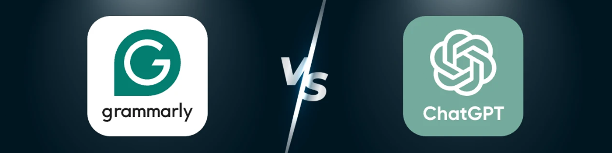

Grammarly VS ChatGPT：哪種工具更適合你？
在當今的數字世界中，有效的溝通和高質量的內容是成功的關鍵，像 Grammarly 和 ChatGPT 這樣的人工智能工具已變得不可或缺。Grammarly 以其 精準的語法和寫作風格修正而聞名，幫助專業人士和學生輕鬆潤色文本。另一方面， OpenAI 的高級對話式人工智能 ChatGPT 不僅提供編輯功能，還能生成富有創意的、類似人類的文本，適用於從頭腦風暴到撰寫整篇博客文章等各種用途。
對人工智能工具的日益依賴凸顯了它們在提高生產力和簡化任務方面的重要性。無論你是想要創作引人入勝文章的內容創作者，還是追求完美溝通的專業人士，這些工具都能簡化你的寫作流程。然而，每種工具的用途各不相同，選擇合適的工具可能並非易事。
本文深入探討 Grammarly 與 ChatGPT 的 爭論，幫助你確定哪款工具最符合你的需求。無論你是想提高寫作質量、激發新想法，還是兩者兼而有之，我們都會提供深入的比較，確保你做出明智的選擇。
Grammarly 與 ChatGPT 的比較
在提高寫作水平或生成內容方面，Grammarly 和 ChatGPT 都開闢了獨特的領域，分別滿足特定的需求和受眾。
Grammarly：你的人工智能寫作助手
Grammarly是一款值得信賴的人工智能寫作助手，旨在幫助用戶解決語法、標點和寫作風格問題，從而提升寫作質量。其用戶友好的界面和先進的算法，使其成為追求完美專業溝通的必備工具。
Grammarly 的主要功能包括：
- 語法糾正 ：立即識別並糾正拼寫、語法和標點符號錯誤。
- 語氣檢測 ：建議進行調整以確保你的寫作傳達正確的語氣，無論是正式的、隨意的還是有說服力的。
- 抄襲檢測 ：根據數十億在線資源驗證你的內容的原創性。
- 寫作建議 ：提供見解以提高清晰度、簡潔性和參與度。
Grammarly 是作家、學生、專業人士和團隊 的首選工具，他們需要在電子郵件、論文和商業文檔中保持一致且無錯誤的寫作。
ChatGPT：人工智能聊天機器人
ChatGPT由 OpenAI 開發，是一種對話式 AI 模型，旨在在各種情境下生成類似人類的文本。其多功能性使其成為創意和實用應用的寶貴資源。
ChatGPT 的主要功能包括：
- 內容創作 ：生成博客文章、故事、廣告文案等。
- 頭腦風暴 ：幫助用戶為項目、活動或寫作提示提出想法。
- 回答問題 ：提供詳細的解釋並解決多個主題的疑問。
- 個性化幫助 ：根據用戶輸入制定針對特定需求的定製響應。
ChatGPT 是尋求創作靈感、技術援助或創新的基於文本的解決方案的 內容創作者、學生、開發人員和企業 的理想解決方案。
通過了解 Grammarly 和 ChatGPT 的獨特功能，你可以開始確定哪種工具更符合你的目標——無論你是專注於完善你的寫作還是創造全新的東西。
用例：何時使用 Grammarly 和 ChatGPT
在Grammarly 和 ChatGPT 之間選擇合適的工具取決於你的具體寫作目標。以下是每種工具各自擅長的場景：
Grammarly：提高寫作準確性
校對和編輯專業文檔 ：Grammarly 會仔細掃描語法錯誤、標點錯誤和風格不一致，確保你的文檔保持高專業標準。

改進電子郵件、論文和報告 ：無論你是在起草電子郵件、撰寫論文還是準備報告，Grammarly 都會提供實時建議，以提高清晰度和連貫性，使你的寫作更有效。

確保語法準確和寫作優美 ：通過語氣檢測和抄襲檢查等功能，Grammarly 可以幫助你呈現優美的原創內容，並根據你的目標受眾量身定製。

Grammarly 對於追求無錯誤和精致寫作的作家、學生、專業人士和團隊特別有益。
ChatGPT：激發創造力和創意生成
生成創意內容 ：ChatGPT 可以製作引人入勝的博客、引人入勝的故事和引人注目的廣告文案，作為尋求新鮮素材的內容創作者的多功能工具。

集思廣益或解答疑問 ：當你需要創新想法或有關各種主題的詳細解釋時，ChatGPT 可以充當知識淵博的助手，促進頭腦風暴過程。

撰寫電子郵件或簡化技術說明 ：ChatGPT 可以起草個性化電子郵件，並將複雜的技術信息分解為易於理解的語言，使其成為有效溝通的寶貴資產。

ChatGPT 非常適合希望增強創造力和簡化溝通的內容創作者、學生、開發人員和企業。
通過了解這些不同的用例，你可以有效地利用 Grammarly 進行精確編輯和利用 ChatGPT 進行創意內容生成，從而使每個工具都與你的特定寫作需求保持一致。
Grammarly 與 ChatGPT 的優缺點
Grammarly 和 ChatGPT 各有優勢，但也存在一些局限性。了解它們的優缺點將有助於你確定哪種工具最適合你的需求。
Grammarly 的優點
- 準確的語法和風格建議 ：Grammarly 擅長高度準確地識別和糾正語法、標點和風格錯誤。
- 用戶友好界面 ：其直觀的設計和與 Microsoft Word 和電子郵件客戶端等流行平台的无縫集成使各個級別的用戶都可以使用。
- 高級編輯功能 ：語氣檢測、清晰度建議和抄襲檢測等工具可確保你的寫作專業且精致。
Grammarly 缺點
- 訂閱費用 ：音調檢測和抄襲檢查等高級功能需要付費訂閱，這可能並不適合每個人的預算。
- 偶爾過度糾正 ：有時，Grammarly 的建議可能會改變句子的預期語氣或含義。
ChatGPT 優點
- 多功能內容生成 ：ChatGPT 可以創建多種內容類型，從博客文章和故事到廣告文案和電子郵件草稿，提供無與倫比的創作靈活性。
- 適應性 ：該工具可適應各種環境，並根據用戶提示提供個性化響應。
- 免費訪問 ：強大的免費層使用戶可以使用 ChatGPT 進行一般查詢和內容生成。
ChatGPT 缺點
- 語法和風格缺乏精確性 ：雖然 ChatGPT 可以生成連貫的文本，但它不像 Grammarly 那樣提供高級語法和語調校正。
- 需要手動校對 ：生成的內容通常需要審查其準確性和相關性，特別是在正式或技術環境中。
Grammarly 與 ChatGPT 的價格比較
在 Grammarly 和 ChatGPT 之間進行選擇時，價格是一個重要的考慮因素。這兩款工具都提供多種方案，以滿足不同用戶的需求，從免費選項到高級訂閱，應有盡有。
Grammarly 定價等級
免費計劃 ：提供基本的寫作建議，包括語法、標點和簡潔性。非常適合尋求基本寫作幫助的普通用戶。
專業計劃 ：取代之前的高級計劃，提供全句改寫、語氣調整、風格指南和生成式 AI 提示等高級功能。個人 and 團隊均可使用，價格如下：
- 每月訂閱費 ：每位會員每月 30 美元。
- 季度訂閱 ：每個月每位會員 60 美元。
- 年度訂閱費 ：每位會員每年 144 美元（平均每月 12 美元）。
商業計劃 ：專為團隊設計，提供風格指南、品牌基調、摘要和分析等協作功能。價格為每位成員每月 15 美元起，最低需三名成員。
ChatGPT 定價層級
免費版本 ：提供對 GPT-3.5 的訪問，適用於一般查詢和基本任務。功能有限，高峰時段響應速度可能會較慢。
ChatGPT Plus ：價格為每月 20 美元，此等級提供：
- 訪問 GPT-4 以獲得更準確、更細緻的響應。
- 響應時間更快。
- 優先使用新功能和改進。
ChatGPT Pro ：於 2024 年 12 月推出，每月收費 200 美元，面向研究和工程應用。優勢包括：
- 無限制訪問 o1 和 GPT-4o 等高級模型。
- 高級語音模式。
- 增強執行複雜任務的計算能力。
團隊和企業計劃 ：專為需要多用戶許可證的組織量身定製，提供協作工具和管理控制。價格根據團隊規模和具體需求而有所不同。
物有所值分析
Grammarly ：免費版足以滿足需要基本寫作修改的用戶。專業版功能全面，對於希望提升寫作質量並保持品牌一致性的個人 and 小型團隊來說，經濟實惠。商業版則非常適合需要協作工具和高級分析功能的大型團隊。
ChatGPT ：免費版適合普通用戶。ChatGPT Plus 為尋求以合理價格獲得增強型 AI 功能的專業人士提供了顯著的價值。ChatGPT Pro 則面向需要高級功能和更多計算資源的重度用戶和研究人員，因此其較高的價格是合理的。
總而言之，Grammarly 提供結構化的計劃，以滿足從個人 to 大型團隊等不同級別的用戶需求，並專注於寫作能力的提升。ChatGPT 的各層級涵蓋從普通用戶 to 專業人員的各種用戶，並提供可擴展的 AI 功能以滿足多樣化的需求。
結合 Grammarly 和 ChatGPT
Grammarly 和 ChatGPT 各自在領域表現出色，但將它們的優勢結合起來，可以釋放出無與倫比的生產力和卓越的寫作能力。通過利用這兩種工具，你可以簡化工作流程，輕鬆創作出精美的專業品質內容。
兩種工具如何互補
Grammarly 擅長精煉和完善現有文本，而 ChatGPT 則擅長激發創意和創作新鮮內容。兩者強強聯手，組成了活力四射的二人組：ChatGPT 提供創意火花和基礎文本，而 Grammarly 則確保最終輸出無錯誤、清晰易懂且符合你的受眾需求。
工作流集成
- 從 ChatGPT 開始 ：使用 ChatGPT 集思廣益、撰寫內容草稿或探索某個主題的多種處理方法。無論你是撰寫博客文章、電子郵件還是創意故事，ChatGPT 都能為你提供良好的起點。
- 使用 Grammarly 潤色 ：內容生成後，使用 Grammarly 進行潤色，糾正語法錯誤，優化語氣，確保文風一致。使用 Grammarly 的高級建議功能，提升清晰度和專業度。
- 迭代和優化 ：如有需要，請重新審閱你的 ChatGPT 草稿，並參考 Grammarly 的反饋來提升整體質量。這個迭代過程可確保你的內容兼具創意和精良。
最大限度提高生產力
同時使用這兩種工具可以帶來以下幾個好處：
- 效率 ：ChatGPT 加速了起草階段，而 Grammarly 加快了編輯速度，從而減少了內容創作所花費的總體時間。
- 質量保證 ：Grammarly 的高級檢查確保 ChatGPT 生成的內容不僅引人入勝，而且沒有錯誤且風格合適。
- 學習機會 ：Grammarly 對其建議提供解釋，使你能夠隨著時間的推移學習並提高你的寫作技巧。
將 ChatGPT 和 Grammarly 集成到你的工作流程中可以實現更高效、更有效的內容製作，將人工智能驅動的創造力與細緻的編輯相結合。
Grammarly 與 ChatGPT：哪一個更適合你？
在Grammarly 和 ChatGPT 之間做出選擇很大程度上取決於你的個人需求和目標。對於需要精確語法更正和文筆優美的人來說，Grammarly 是理想的工具，非常適合撰寫專業文檔、學術論文和清晰的溝通。另一方面，ChatGPT 擅長創意內容生成和頭腦風暴，使其成為內容創作者、營銷人員和企業的強大資源。
如果你想兩全其美，那麼結合使用這些工具可以顯著提高你的工作效率。Grammarly 確保你的寫作準確無誤且專業，而 ChatGPT 則可以激發你的創造力並產生創新的內容創意。
最棒的是？在共享訂閱平台上，你可以以低成本使用這兩款工具，無需花費太多即可享受其高級功能。我們鼓勵你同時試用 Grammarly 和 ChatGPT，體驗它們如何相輔相成，並確定哪一款最適合你的工作流程。
立即邁出第一步！訂閱共享計劃，探索這些 AI 工具，釋放你的全部寫作潛力。